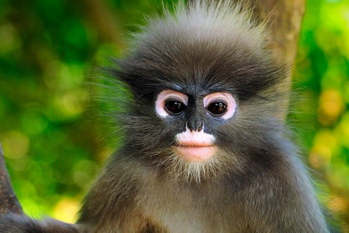
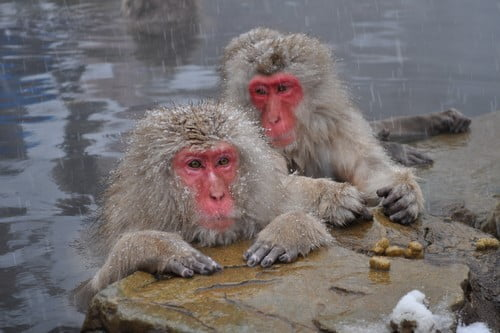
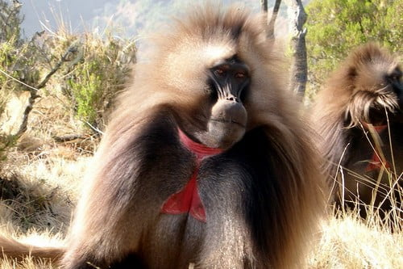
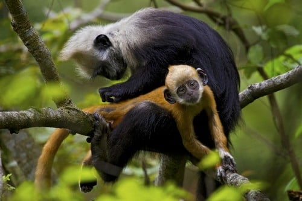
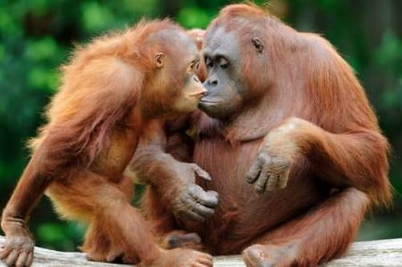
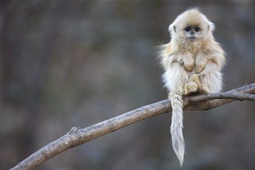
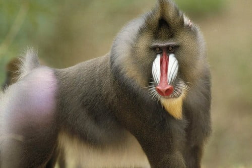
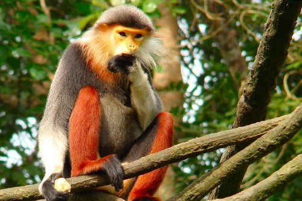
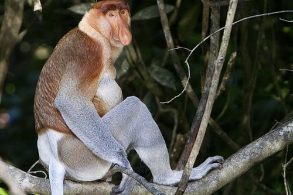
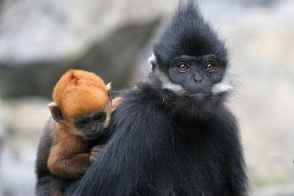

| Number | Image | Notes | Fightable | Winner | Injury Prediction |
|---|---|---|---|---|---|
| 1 | Dusky Leaf Monkey  |
Small in size, may prove hard to hit in combat. | Yes | Joseph | Bite Marks, Scratches, possible bruising |
| 2 | Japanese Macaque  |
Used to relaxation, but not to be underestimated. | Yes | Tie | Bite Marks, Scratches, Broken Arm |
| 3 | The Gelada Monkeys  |
Related to the Baboon, The pain will be horrific | No | Gelada | Bite Marks, Scratches, Crushed Ribcage and Legs |
| 4 | White-headed Langur  |
Endangered, about 70 left in the world. Easy Fight | Yes | Joseph | Bite Marks, Scratches, possible bruising |
| 5 | Orangutan  |
Strong Grip, long arms, can use a knife | No | Orangutan | Bite Marks, Possible Limb Removal |
| 6 | Golden Snub-Nosed Monkey  |
Small, cannot defend with itty bitty fists | Yes | Joseph | 1 small scratch |
| 7 | Baboon  |
This animal will kill me | No | Baboon | Bite Marks, Limb Removal, Skull Crushed via Rock |
| 8 | Red Shanked Douc  |
Goofy looking monkey, no camo at all | Yes | Joseph | Bite Marks, Scratches, possible bruising |
| 9 | Proboscis Monkey  |
Looks like a creepy uncle who talks about the war, will enjoy fight. | Yes | Joseph | Bite Marks, Scratches, broken hand |
| 4 | François Langur  |
Has sideburns, thinks he is a tough little monkey. | Yes | Joseph | Bite Marks, Scratches, possible bruising |